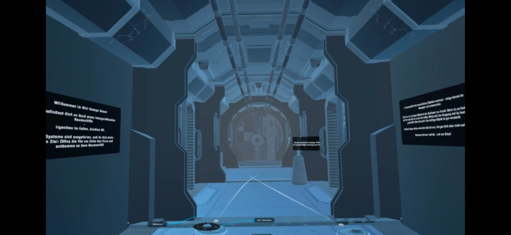
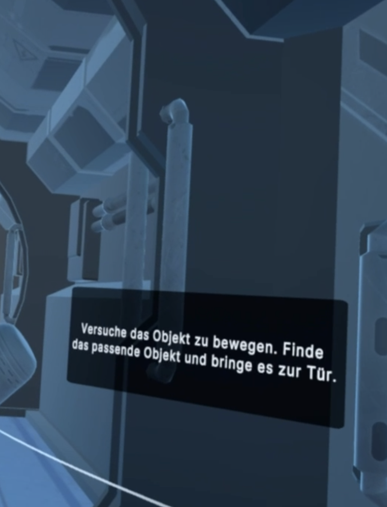
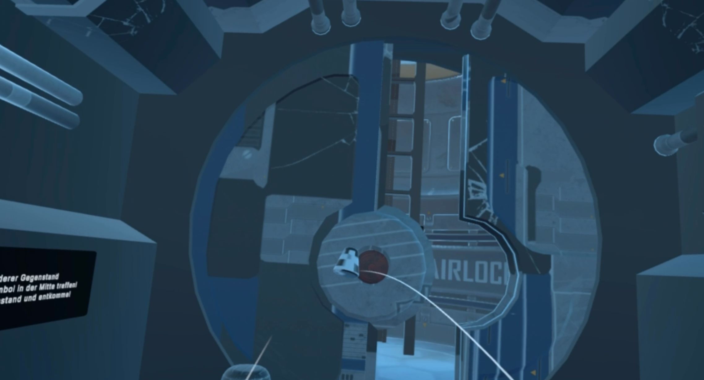
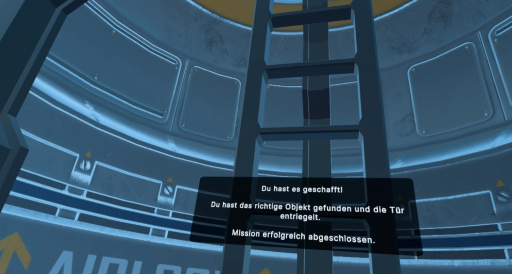

Modul: AR/VR Gaming
2025
Ein VR-Escape-Room in Unity: In einem verlassenen Raumschiff müssen Spieler Hinweise entdecken, Objekte manipulieren und Rätsel lösen, um aus dem Schiff zu entkommen.
Escape
Room
01 / Ausgangslage
Wie entkommt man aus einem verlassenen Raumschiff?
Ziel des Projekts war die Entwicklung eines kurzen, spannenden Escape-Room-Erlebnisses für die Meta Quest 2. Die Spieler befinden sich in einem verlassenen Raumschiff und müssen ihre Umgebung aufmerksam untersuchen, um einen Weg nach draußen zu finden.
Zu Beginn steht man in einem Korridor vor einer verschlossenen Tür. Hinweise an den Wänden führen durch die Mission. Durch das Entdecken von Hinweisen und das Interagieren mit Gegenständen öffnet sich nach und nach der Weg in den nächsten Raum.


02 / Verlauf
Ein kurzer Raum, in dem jede Interaktion funktionieren muss.
Ideenfindung
Ich wollte etwas Immersives für VR entwickeln. Ein Escape-Room passte dafür gut, weil die Spieler selbst denken, suchen und ausprobieren müssen. Als Setting habe ich mich für ein verlassenes Raumschiff entschieden. Mein Fokus lag auf Spielerführung und Interaktion.
Entwicklung
Ich habe darauf geachtet, dass alles mit den VR-Controllern funktioniert: Bewegung, Greifen und Interaktion mit den Objekten. Außerdem habe ich die Funktion der Tür programmiert, die sich öffnet, wenn das richtige Objekt auf dem roten Kreis liegt. Die Hinweise habe ich so platziert, dass man intuitiv durch den Raum geführt wird.
Testen
Ich habe jede Änderung direkt in der VR-Brille getestet, denn nur dort sieht man, ob Greifen, Wege und Hinweise wirklich funktionieren. Daraus ergaben sich Anpassungen bei der Platzierung der Hinweise und bei der Reaktionszeit der Tür.
03 / Ergebnis
„Das Objekt zu greifen war die größte Hürde, und der Moment, in dem sich die Tür öffnet, der beste.“
Das Ergebnis ist ein kompletter Mini-Escape-Room: Metallische Texturen, eine Skybox mit Weltraum vor den Fenstern und durchgehende Space-Musik erzeugen die Atmosphäre eines verlassenen Raumschiffs. Wer das passende Objekt findet und auf den roten Kreis legt, öffnet die große Tür. Dieser Moment, in dem Greifen, Rätsel und Tür zusammenspielen, war für mich das Highlight der Entwicklung. Zum Schluss erscheint die Nachricht „Du hast es geschafft!“ und eine Leiter markiert das Entkommen.


Quellen: Raumschiff-Modell von CGTrader, Metalltexturen „Yughues Free Metal Materials“ aus dem Unity Asset Store, Musik „Kinetic“ von Revo (Uppbeat).
Ende / 04
Zurück zum Archiv.
Alle Projekte ansehen →